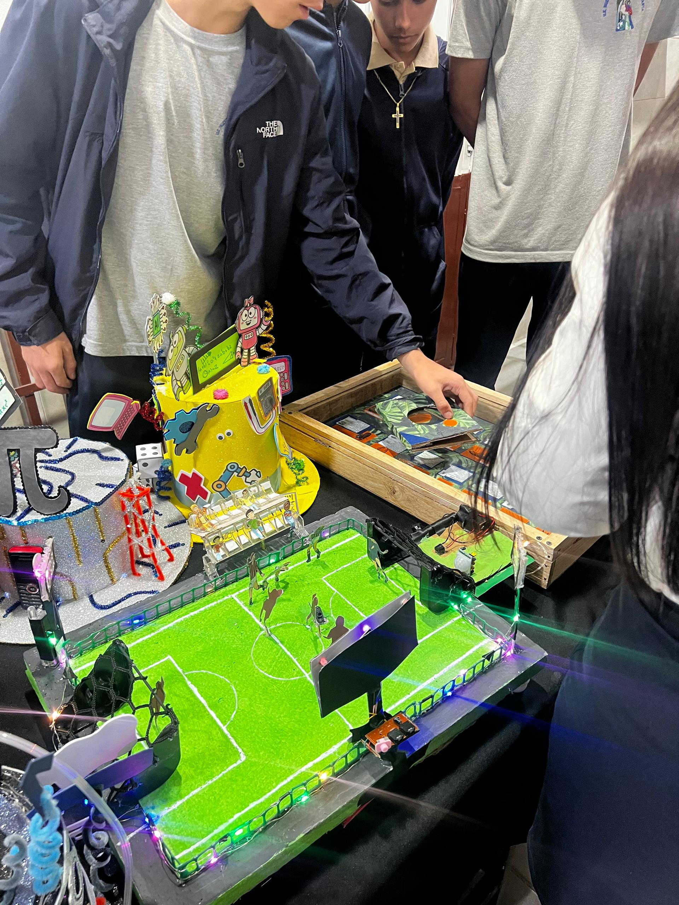
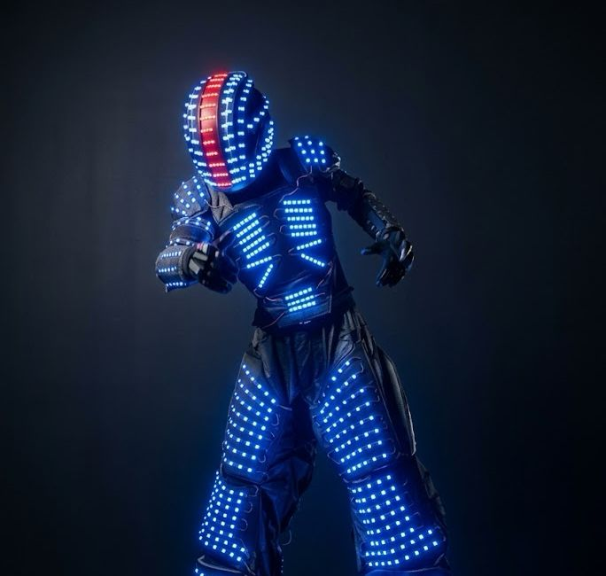
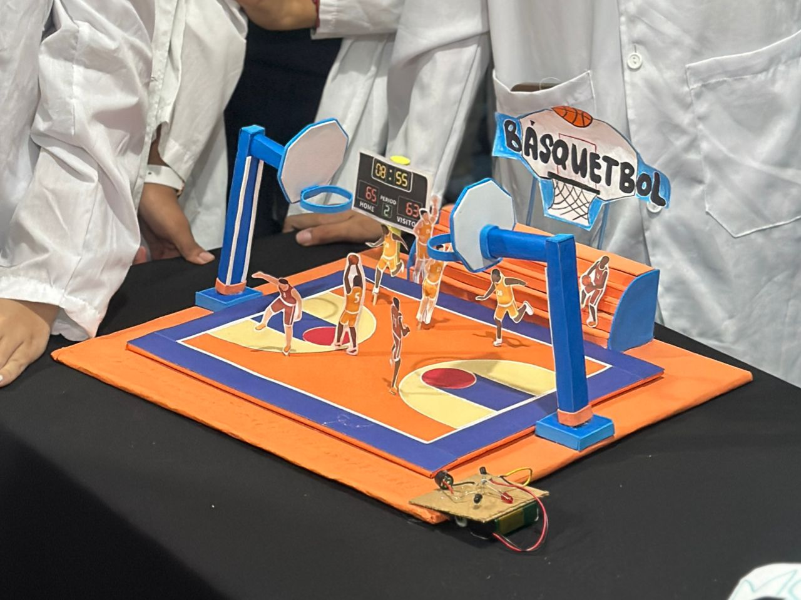

En el segundo lapso se realizaron varias maquetas entre esas destacaron, un sombrero que tenía que ver sobre pi en el área de matemáticas y una caja en entomológica, donde se exhibieron distintos tipos de insectos, en el área de biología y todas estas maquetas se exhibieron en una mesa grande en los pasillos de cada piso de la institución y en informática, se trabaja una página web sobre la Mecatronica, específicamente la convergencia tecnológica.

En el segundo lapso se realizó varias maquetas entre esas destacaron, un sombrero que tenía que ver sobre pi en el área de matemáticas y una caja en etimológica, donde se exhibieron distintos tipos de insectos, en el área de biología y todas estas maquetas se exhibieron en una mesa grande en los pasillos de cada piso de la institución y en informática, se trabaja una página web sobre la Mecatronica, específicamente la convergencia tecnológica.
En tercer lapso se elabora un robot entre todo el salón para varias áreas (idea del profesor de matemáticas) y en informática se crea un tríptico con HTML y css que habla sobre los proyectos de cada año escolar.

Alma Romero
En el primer lapso se elaboró principalmente una maqueta sobre una cancha que detectaba el humo y prendía automáticamente una sirena y una luz para poder advertir a las personas a tiempo que se presentó en el auditorio ,y en el área de informática se trabaja una página web sobre la Mecatronica, y cómo se aplicó a cada materia ese lapso.
